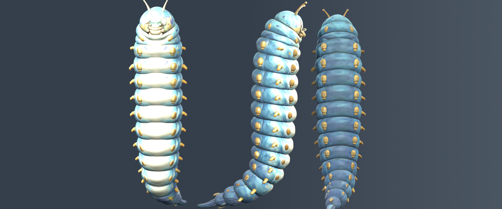

YOU ARE OLD, FATHER WILLIAM
毛毛虫的蘑菇森林 · 第二章
WASD / 方向键走动，空格跳跃；拖拽鼠标转动视角，滚轮缩放；E 或空格：对话、咬蘑菇、互动（身旁有可互动的东西时，空格优先互动）；1 喝药水变小，2 吃蛋糕变大；Esc 暂停。连续咬同一侧会“过头”，再咬另一侧一口即可恢复。

CHAPTER 02 CLEARED
“控制好自己，你就能找到你是谁。”
CHAPTER 02 / 03
Advice from a Caterpillar
正在走进森林…
WASD 走动 · 鼠标拖拽转视角 · E 互动